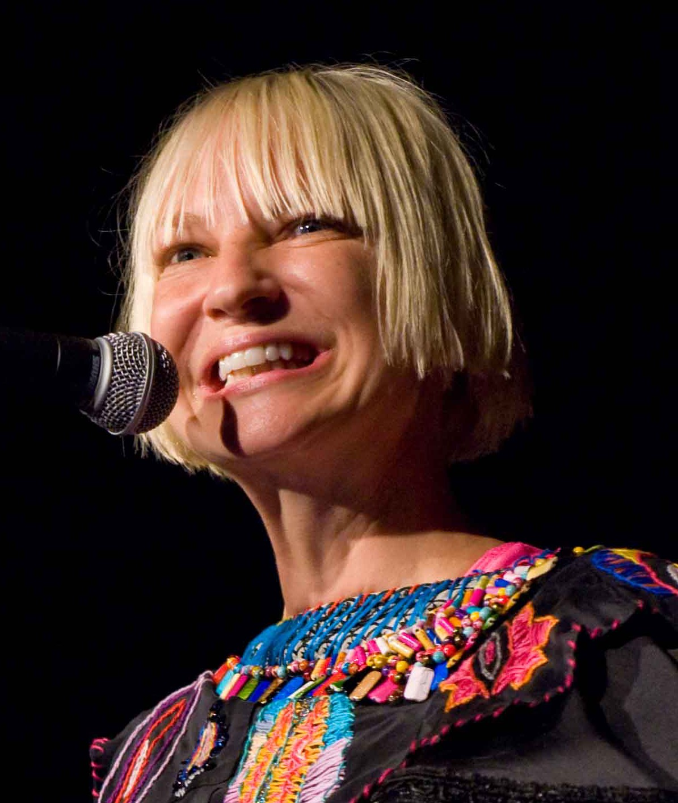

Sia Kate Isobelle Furler
An australian singer-songwriter, record producer and music video director

This picture was the time when she still shows her face as she sings
The time line of Sia's career:
- 1975 - Sia was born
- 1990s - Sia started a career as a singer in the local acid jazz band Crisp
- 1997 - Crisp disbanned, and Sia performed as a background vocalist for British band Jamiroquai
- 2000 - Sia signed a recording contract with Sony Music's sub-label Dance Pool and released her first single, "Taken for Granted"
- 2000-2010 - Sia released 5 albums
- 2010-2013 - She began to wear a mask, so she can have a private life after her music got a huge hit. She began to use drugs and later retired to began to write songs for other artists
- 2013 - She released a song ("Elastic heart") and co-wrote 3 songs which made the top 1 on the US top 200 billboard
- 2014 - She released "Chandelier" which made top 8 on the US Billdboard Hot 100
- 2017 - Sia released her new album "Everyday is chrismas"
"That's the thing about awards - it's for the people who do all the hard work behind the scenes. An award is just a clap at them". -Sia